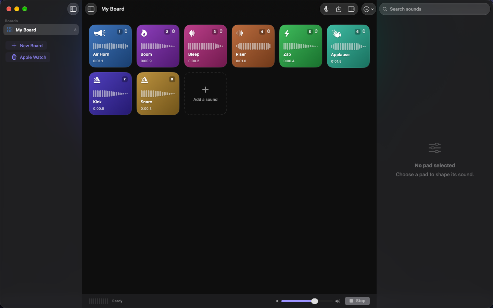

Blurt Board
A soundboard for iPhone, iPad, Mac and Apple Watch. Bring in audio you already have or record something new, shape it with effects, and fire it with one tap.

mp3, m4a, wav, aiff, caf — if your device can decode it, Blurt can use it. Drag files straight onto the board on Mac and iPad.
Hit the microphone and the take lands on a pad. On Apple Watch you can record on your wrist and send it to your iPhone.
EQ, reverb, delay, pitch, speed, distortion, compression, chorus, flanger and a gate. Reverse it, trim it, normalise it — your original file is never touched.
One shot, hold, toggle or loop, set per pad. On Mac and iPad the keyboard plays the board like a sampler.
Turn on iCloud Drive and the same boards appear on every device, each laid out for the screen it is on.
On Mac it lives in the menu bar too, so a pad can go out mid-call without anything coming to the front.
Blurt costs nothing, shows no ads and locks nothing behind a purchase. There is a tip jar at the bottom of Settings if you want to leave something, and it unlocks precisely nothing.
It also collects nothing. There is no network code in the app at all — no accounts, no analytics, no tracking. See the privacy policy for the detail.
The support page covers the common questions, or write to blurtboard.app@gmail.com.